Bollettini neve · Guide
Bollettini neve quotidiani per sciatori: dove c'è neve, cosa arriva e dove sciare, dalla mappa neve di SnowScope e dalle stazioni di misura. Ogni numero viene dai dati del giorno.

Skipass giornalieri alpini da 36 EUR: nove stazioni confrontate per prezzo, chilometri di piste e neve che offrono di solito, per trovare la miglior giornata di sci in rapporto al prezzo.
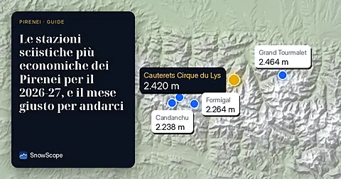
Skipass giornalieri nei Pirenei da 46 EUR: sei stazioni tra Francia, Spagna e Andorra confrontate per prezzo, poi per la neve che hanno di solito a dicembre e gennaio.
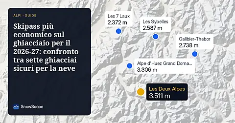
Sci sul ghiacciaio da 68 EUR al giorno: abbiamo confrontato sette ghiacciai in Francia, Austria, Germania e Svizzera per prezzo e per la neve che di solito trattengono a dicembre.
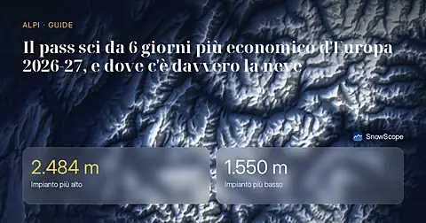
Sei giorni di sci da 191 EUR: abbiamo classificato dieci settimane sugli sci low cost in Europa per prezzo, poi abbiamo controllato 46 inverni passati per capire dove la neve è affidabile.

Da 20 EUR per un weekend di apertura a skipass da 6 giorni prima di Natale: un calendario delle offerte sci più economiche di inizio stagione nelle Alpi per il 2026, con la neve che puoi aspettarti.

Beaver Mountain applica un unico prezzo adulti di 75 $ per la stagione 2026-27. La nostra storia della neve dice che inizio dicembre lì è un vero azzardo; la settimana prima di Natale è molto più sicura.

Il biglietto adulti 2026/27 di Bridger Bowl è a 86 $ online, 99 $ alla cassa. La nostra serie storica dice che metà dicembre è un testa o croce a mezza montagna; fine dicembre è più sicuro.

Ski Cooper mantiene il prezzo adulti nei giorni feriali a 49 $ per il 2026-27 (99 $ nel weekend). A mezza montagna di solito ci sono 26 in (66 cm) di neve il 15 dicembre, il 70 % degli inverni sopra i 20 in.

I biglietti di Sunlight partono da 74 $ e il suo Sunny 6 Pack costa 349 $ se comprato entro il 30 novembre 2026. A mezza montagna c'erano 20 in (50 cm) entro il 15 dicembre nel 72 % degli inverni.

A Timberline lo skipass giornaliero costa 129 $ in bassa stagione e 161 $ in alta stagione; lo skipass pomeridiano è a 96 $ in bassa stagione. A metà montagna di solito si trovano 52 in (132 cm) entro il 15 dicembre.
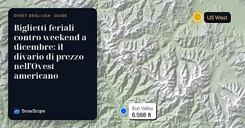
Da Ski Cooper (49 $ nei giorni feriali, 99 $ nel weekend) a Mt. Baker (98,80 $ contro 115,42 $): le differenze di prezzo di dicembre verificate in sette stazioni dell'Ovest americano, con le loro probabilità di neve.
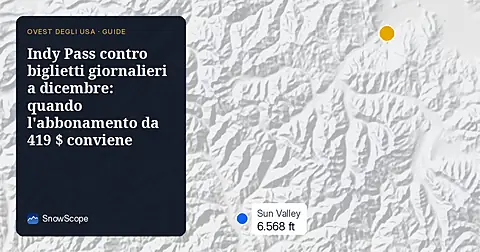
Indy Base Pass 419 $, Indy+ 469 $, due giorni in ogni stazione aderente. Lo abbiamo confrontato con i prezzi giornalieri verificati di sette stazioni Indy a dicembre, e le loro probabilità di neve.

I biglietti adulti di Lookout Pass per il 2026-2027 sono a 63 $ nei giorni feriali con prenotazione, 75 $ nel weekend. A mezza montagna c'erano 20 in (50 cm) entro il 15 dicembre nell'85 % degli inverni passati.
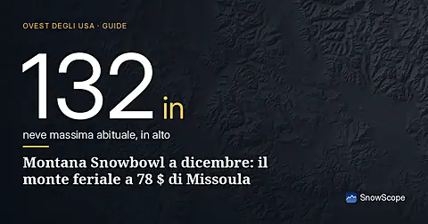
I biglietti adulti 2026/27 di Montana Snowbowl sono a 78 $ nei feriali e 85 $ nel weekend. A mezza montagna c'erano 20 in (50 cm) entro il 15 dicembre nell'83 % dei nostri inverni passati.

Il 3-Pack 2026/2027 di Schweitzer costa 249 $, 83 $ al giorno secondo il conteggio dello stesso resort. La cima di solito mantiene 54 in (138 cm) di neve entro il 15 dicembre.

Krvavec a dicembre: giornaliero 47 EUR, 6 giorni 205 EUR, ma solo 13 cm a metà montagna in un tipico 15 dicembre e 11 inverni su 46 senza neve quel giorno.

Scia su 157 km di piste mappate a Serre Chevalier, dove la cima della montagna ha una probabilità del 100 % di avere neve entro metà dicembre.

Turracher Höhe a dicembre: 23 cm a metà montagna in un tipico 15 dicembre, 39 % degli inverni con 30 cm prima di Natale; 6 giorni in bassa stagione 353 EUR.

Hochkar a dicembre: giornalieri visti da 32,90 a 47,90 EUR nelle date di dicembre; 38 cm a metà montagna in un tipico 15 dicembre, in calo dagli anni '80.
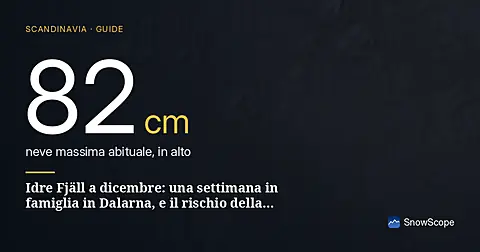
Idre Fjäll a dicembre: 32 cm a metà montagna in un tipico 15 dicembre; 65 % degli inverni con 30 cm a metà dicembre, 76 % a Natale. Probabilità oneste.

Brighton da 72 $ contro Ski Cooper a 49 $ nei giorni feriali e Wolf Creek a 96 $: le stazioni economiche dello Utah e del Colorado a confronto su 46 inverni di neve a dicembre.

Dieci stazioni sciistiche europee classificate per il valore di dicembre, guidate da Les 2 Alpes con 75 cm di neve a metà montagna.

Gli skipass giornalieri di Brundage partono da appena 65 $ in alcuni giorni; a mezza montagna c'erano 20 in (50 cm) di neve il 15 dicembre nell'87 % dei nostri inverni passati. Date festive da evitare.

Boí Taüll parte da 2039 m e batte Baqueira Beret sul prezzo dello skipass, anche se la neve di inizio dicembre richiede un po' di pazienza.
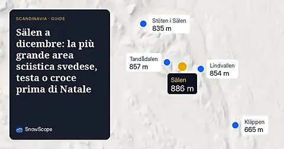
Sälen a dicembre: 28 cm in un tipico 15 dicembre e 48 % degli inverni con 30 cm a metà dicembre, meno che negli anni '80; Trysil accanto fa meglio.

Gli skipass giornalieri adulti di Snow King partono da 100 $. Secondo la nostra storia nevosa, a mezza montagna si registravano 20 in (50 cm) entro il 15 dicembre nell'87 % degli inverni: un modo economico per sciare nella valle di Jackson.

Orcières Merlette offre una base elevata a 1.826 m e uno skipass di 6 giorni da 227 EUR, rendendolo una scelta affidabile per una vacanza sulla neve a dicembre.
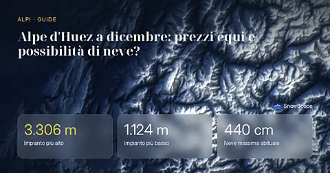
Alpe d'Huez merita per dicembre 2026? Controlliamo le probabilità di neve, il prezzo di partenza di 58,00 EUR e confrontiamo con Les 2 Alpes.
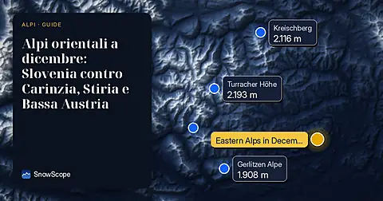
Gli skipass sloveni sono i più economici (Krvavec 205 EUR per 6 giorni), ma lì la neve naturale di dicembre è rara; Lachtal, Hochkar e il ghiacciaio della Möll fanno meglio.
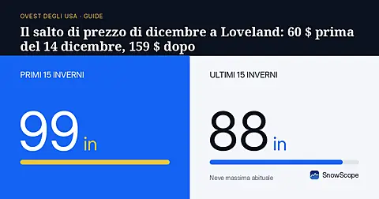
Loveland vende biglietti online a 60 $ fino al 13 dicembre 2026, poi a 159 $ alla cassa. La neve di inizio dicembre è abbastanza buona per approfittarne? I nostri 46 inverni passati rispondono settimana per settimana.

Cauterets offre 25 km di piste per 46 EUR, ma la nostra storia della neve mostra che la migliore possibilità di trovare copertura è l'ultima settimana di dicembre.
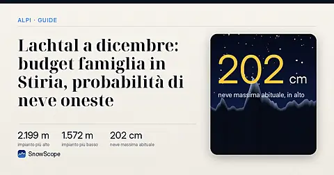
Sciare a Lachtal a dicembre: giornaliero 62 EUR, bambini fino a 6 anni gratis, 46 cm a metà montagna in un tipico 15 dicembre, ma tendenza in netto calo.

I biglietti online di White Pass partono da 69 $ nei giorni fuori picco e 89 $ nei giorni di picco, e a mezza montagna il 15 dicembre c'erano 20 in (50 cm) di neve nell'87 % degli inverni passati.

Scia sui 131 km di piste della Forêt Blanche questo dicembre con uno skipass di sei giorni a 298 EUR.

Ruka a dicembre: skipass 6 giorni 265 EUR, giornaliero 58 EUR; 36 cm in un tipico 15 dicembre, ma solo 39 % degli inverni con 30 cm nella prima settimana.

Al Monterosa Ski lo skipass giornaliero online va da 40,00 a 71,00 EUR. A dicembre la neve è in quota: 124 cm abituali a 3.030 m, 6 cm a 1.207 m.

A Wolf Creek lo skipass adulti per la stagione 2026-2027 costa 96 $ nei giorni normali e 110 $ nei giorni di punta; a mezza montagna la neve era di 34 in (87 cm) in un tipico 15 dicembre.
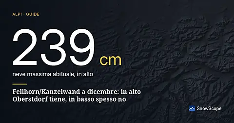
Fellhorn/Kanzelwand a dicembre: 63 cm in vetta (1965 m) in un tipico 15 dicembre, 10 cm in basso; 6 giorni dell'Avvento a 344,50 EUR fino al 20 dicembre.

Pianifica il tuo viaggio a Les Orres nel dicembre 2026 confrontando i prezzi dei pass settimanali con il nostro storico della neve di 46 inverni passati.
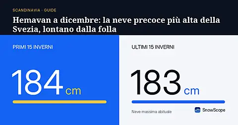
Hemavan a dicembre: 82 cm a metà montagna in un tipico 15 dicembre, ogni inverno con 30 cm a metà dicembre; il dicembre più nevoso della nostra selezione nordica.

Gli skipass giornalieri di Brighton per il 2026/27 partono da 72 $ comprando in anticipo. A mezza montagna il 15 dicembre ci sono di solito 37 in (94 cm) di neve, contro 25 in (64 cm) a Park City.
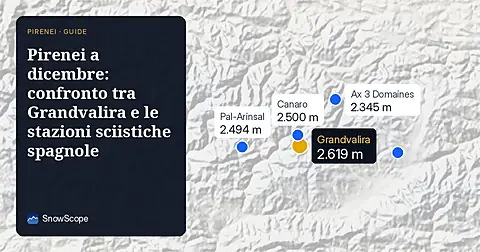
Confronta Grandvalira e le stazioni spagnole a dicembre 2026 per profondità della neve, altitudine degli impianti e prezzi a partire da 49,00 EUR.

Ghiacciaio del Pitztal a dicembre: 87 cm a metà montagna in un tipico 15 dicembre, più neve che negli anni '80; giornaliero 77 EUR, 6 giorni 410 EUR.
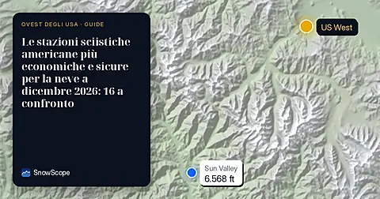
16 stazioni sciistiche americane economiche classificate secondo le probabilità di neve a dicembre su 46 inverni passati, con i prezzi giornalieri verificati: da 49 $ nei giorni feriali a 125 $ e oltre.

Per una settimana bianca in famiglia a basso costo a dicembre ad Astún-Candanchú, punta a fine dicembre, quando le piste in quota hanno buona neve nel 67 % degli inverni passati.

Germania a dicembre: la Zugspitze e la vetta del Fellhorn avevano 30 cm a metà dicembre in almeno 9 inverni su 10; Sudelfeld, Brauneck e Feldberg raramente.

Puy-Saint-Vincent offre uno skipass giornaliero adulto a 44 EUR con buona neve a dicembre in quota, confrontato qui con il grande vicino Serre Chevalier.
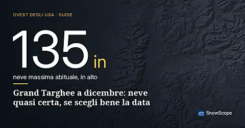
In tutti i nostri 46 inverni passati, a metà montagna di Grand Targhee c'erano sempre almeno 20 in (50 cm) di neve il 15 dicembre. Il biglietto giornaliero online va da 125 $ a 180 $ a seconda della data.
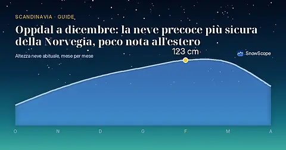
Oppdal a dicembre: 60 cm alla base (585 m) in un tipico 15 dicembre, 93 % degli inverni con 30 cm a metà dicembre, meglio della base di Trysil.

Grimentz-Zinal offre 71 km di piste e una neve sicura in alta quota per il tuo viaggio di dicembre, con skipass di 6 giorni a CHF 339,00.

Austria prima di Natale: Galtür 258 EUR e Kühtai 269 EUR per 6 giorni, con 30 cm in oltre il 90 % degli inverni; i ghiacciai costano di più, le piccole stazioni sono un azzardo.

Stai pianificando un viaggio a dicembre a Baqueira Beret? Guarda la nostra cronologia della neve, i prezzi dei biglietti a partire da 70,00 € per un pass giornaliero e come si confronta con Astún-Candanchú.

Classifichiamo le stazioni sciistiche francesi in base alle probabilità di neve a dicembre e ai prezzi dei pass, partendo da 36,00 EUR per un pass giornaliero adulto a Les Karellis.
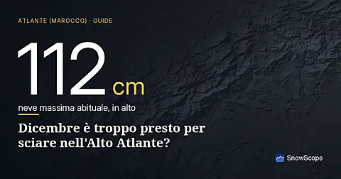
A Oukaïmeden, dicembre dà 18 cm a metà montagna in un mese tipico, contro 44 cm a febbraio e 53 cm a marzo. Cosa dicono 46 inverni sul mese giusto per sciare.
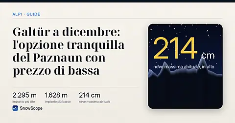
Galtür a dicembre: 55 cm a metà montagna in un tipico 15 dicembre, 93 % degli inverni con 30 cm a metà dicembre; giornaliero di bassa 55,50 EUR fino al 18 dicembre.

Geilo a dicembre: 57 cm a metà montagna in un tipico 15 dicembre, 96 % degli inverni con 30 cm a metà dicembre; giornaliero da 590 NOK (circa 56 EUR).
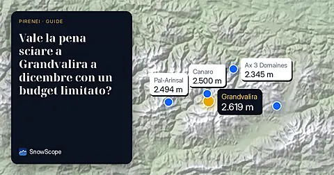
Grandvalira viene spesso venduta come una meta economica per sciare a dicembre, eppure la neve naturale alla base è in media di soli 9 cm negli scorsi inverni.

Hemsedal a dicembre: 70 cm a metà montagna e 106 cm in vetta in un tipico 15 dicembre, ma 32 cm alla base; Geilo vicino da 590 NOK al giorno.

Ghiacciaio di Hintertux a dicembre: 98 cm a 3245 m e 52 cm a metà montagna in un tipico 15 dicembre; giornaliero 82 EUR, 6 giorni 399 EUR.

Confronta le probabilità di neve a dicembre e i prezzi verificati degli skipass a partire da 40,00 EUR nelle aree sciistiche italiane per la tua gita in auto nel weekend.
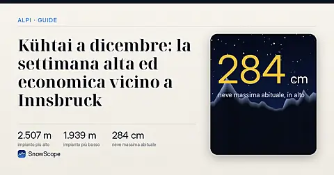
Sciare a Kühtai a dicembre: 60 cm alla base (1939 m) in un tipico 15 dicembre, skipass 6 giorni in bassa stagione a 269 EUR fino al 18 dicembre.

Les 2 Alpes raggiunge i 3.511 m per neve abbondante a dicembre 2026, con un skipass adulti di 6 giorni a 266,50 EUR.
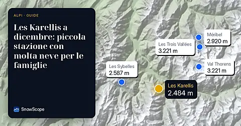
Les Karellis offre 45 km di piste e uno skipass adulto di 6 giorni a 191,00 EUR con una probabilità del 98 % di neve a metà montagna a fine dicembre.

Levi a dicembre: 38 cm in un tipico 15 dicembre, 91 % degli inverni con 30 cm a Natale, e più neve di un tempo; giornaliero 60 EUR, online 57 EUR.

Scia a Livigno per 51,50 EUR al giorno prima del 18 dicembre, quando la neve in cima raggiunge i 30 cm nel 100 % degli inverni passati.

A Michlifen, l'89 % degli inverni non ha quasi neve il 15 dicembre (meno di 5 cm). Cosa dicono 46 inverni sullo sci nel Medio Atlante a dicembre.

Montgenèvre ha 56 cm di neve abituale a dicembre alla base, offrendo agli sciatori del weekend una copertura migliore rispetto a Sestriere, oltre il confine.

Sciare a Obertauern a dicembre: 43 cm in un tipico 15 dicembre a metà montagna, skipass 6 giorni a 331 EUR prima di Natale. Storico neve e prezzi.

Oukaïmeden a metà dicembre: 16 cm a metà montagna in un inverno tipico, 50 cm o più in solo l'11 % degli inverni. Data per data, cosa dicono 46 inverni.
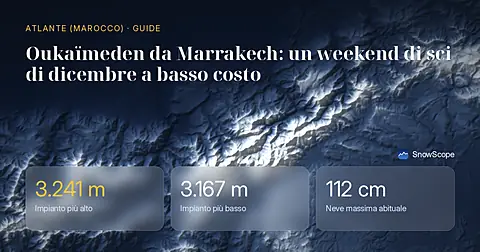
Oukaïmeden è a 50 km in linea d'aria da Marrakech. Come riuscire in un weekend di sci a dicembre: quando partire, quali probabilità di neve, cosa si sa dei prezzi.
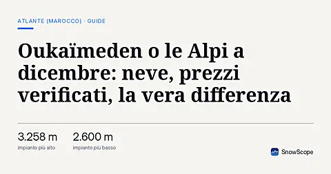
Les 3 Vallées: 75,70 € al giorno dal 5 al 18 dicembre 2026. Oukaïmeden: nessuna tariffa ufficiale online, 16 cm a metà montagna a metà dicembre. Il confronto onesto.
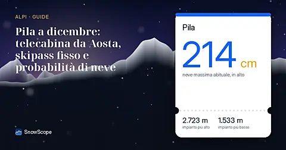
Pila sopra Aosta offre uno skipass giornaliero fisso a 60,00 EUR e neve affidabile a dicembre sulle quote alte.

Gli impianti di Saas-Fee raggiungono i 3.556 m, dove la nostra storia della neve mostra che il 100 % degli inverni passati ha almeno 30 cm di neve entro metà dicembre.

12 località nordiche a dicembre: Hemavan, Hemsedal e Geilo avevano 30 cm a metà montagna a metà dicembre nel 96-100 % degli inverni; giornalieri finlandesi 58-60 EUR.
Probabilità di neve a dicembre su 46 inverni e prezzi giornalieri verificati: Ski Cooper 49 $, Les 3 Vallées 75,70 €, Oukaïmeden senza tariffa ufficiale. Dove funziona una giornata di sci economica a dicembre.

Scopri le piste tranquille di St-Luc Chandolin, dove la neve a metà montagna ha raggiunto i 30 cm nel 98 % degli inverni a fine dicembre.
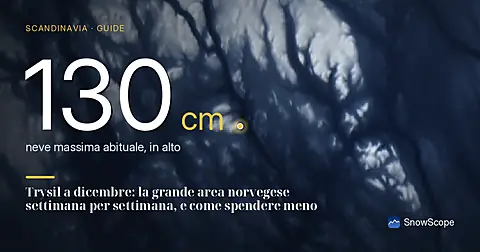
Trysil a dicembre: 44 cm a metà montagna in un tipico 15 dicembre, 83 % degli inverni con 30 cm a metà dicembre; i prezzi sono dinamici, quindi prenotate presto.

Valloire-Valmeinier offre 131 km di piste e il 98 % di probabilità di avere 30 cm di neve a metà montagna entro metà dicembre.
Zugspitze a dicembre: 122 cm a 2627 m in un tipico 15 dicembre, giornaliero adulti online 70,50 EUR; Garmisch-Classic sotto 69 EUR con molta meno neve.

Mölltaler Gletscher a dicembre: 66 cm all'impianto più basso (2103 m) e 128 cm a metà montagna in un tipico 15 dicembre; 6 giorni in bassa stagione 332 EUR.

Mt. Baker a dicembre: 46 in (116 cm) di neve a metà montagna in un tipico 15 dicembre, e uno skipass da 98,80 $ dal lunedì al giovedì, venduto solo in giornata alla cassa.

Un principiante prudente può fidarsi di Courmayeur a dicembre, quando la media a metà montagna è di 60 cm di neve nei nostri inverni passati?

Åre a dicembre: 40 cm a metà montagna in un tipico 15 dicembre, 89 % degli inverni con 30 cm a metà dicembre, ma forte calo in vetta dagli anni '80.

Il riconoscitore di cime di SnowScope è un'app gratuita per riconoscere le montagne: punta il telefono verso i monti e ti dice il nome delle cime, con quota, distanza e tempo di salita. I nostri test: il 98 % delle cime che mostra è davvero in vista, e su foto reali ha corretto errori della bussola fino a 105° portandoli a 0,15°. Gratis con 3 nomi, tutte le cime con 0,99 € una sola volta.

Punto neve a Bogus Basin per chi scia da Boise il 13 novembre 2026: ancora niente neve al suolo, pioggia e neve bagnata nel weekend con il limite verso 6,300-6,800 ft, poi aria più fredda e circa 8 in in vetta entro la prossima settimana.
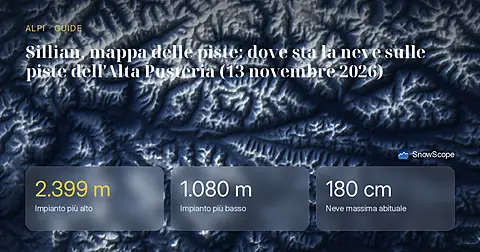
La mappa delle piste di Sillian (Hochpustertal) con il nostro strato di neve il 13 novembre 2026: 8,6 cm in vetta a 2399 m, pendii bassi scoperti e una settimana di pioggia e neve miste con il limite verso 1.800-2.000 m.

Bollettino neve di Lech Zürs del 13 novembre 2026: circa 6 cm in vetta (2436 m) e a metà montagna, niente a Lech a 1430 m. Questa settimana 42 cm in alto secondo la nostra previsione, fino a 91 cm secondo altre, pioggia e neve mista intorno ai 1400 m. E perché Lech è il lato nevoso dell'Arlberg.
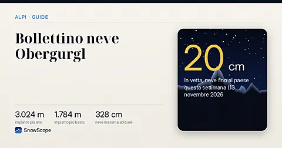
Bollettino neve di Obergurgl del 13 novembre 2026: circa 20 cm in vetta (3024 m), 5 cm a metà montagna, niente agli impianti più bassi (1784 m). Previsioni della settimana: 34 cm in alto, 21 cm in basso, quota neve intorno ai 1700 m. E il solito inizio di stagione.
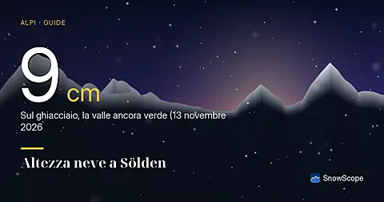
Altezza neve a Sölden il 13 novembre 2026: circa 9 cm in vetta (3245 m), 5 cm a metà montagna, niente in valle a 1346 m. 25 cm previsti in alto questa settimana, pioggia sotto i 1620 m circa. Ghiacciaio contro paese, con 46 inverni passati.

Nevicate a Val Thorens, 13 novembre 2026: 27 cm caduti in vetta (3175 m) e 17 cm a 2498 m in sette giorni; l'altezza della neve è 50 cm e 8 cm. Prossimi sette giorni: 86 cm in vetta, 73 cm a 2498 m, limite delle nevicate ben sotto il paese. La stagione abituale da 46 inverni.

L'altezza della neve a Chamonix il 13 novembre 2026, quota per quota: niente sul fondovalle, 1 cm a 2001 m, 12 cm in cima a Brévent-Flégère (2486 m), da 5 a 24 cm in cima ai Grands Montets (2768 m). Circa un metro previsto in quota questa settimana, pioggia in valle. Quanta neve fa di solito a Chamonix, da 46 inverni.

Condizioni neve a Tignes il 13 novembre 2026: 42 cm in vetta (3447 m), 12 cm a 2503 m, fondovalle senza neve a 1559 m e 99 cm previsti in vetta in sette giorni, con pioggia sotto i 1700 m circa. Il confronto con 46 inverni passati.

Il bollettino sci di Purgatory Resort (Durango, Colorado) dal nostro modello di neve: 3 in (7 cm) in vetta, base e metà montagna senza neve, da 4 a 7 in di neve fresca previsti nei prossimi sette giorni, e com'è un inverno abituale a Purgatory.

Il versante soleggiato del Piccolo San Bernardo in numeri.

La neve all'Alpe Devero (Ossola, Piemonte): 2 cm in vetta (2201 m), niente più in basso, 36 cm di neve fresca prevista in vetta nei prossimi sette giorni. La piccola località senza auto e il suo inverno abituale in numeri.
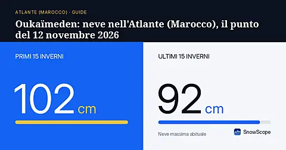
Ancora niente neve a Oukaïmeden: 0 cm a tutte e tre le quote, nulla negli ultimi sette giorni, nulla nella settimana che viene. Cosa porta un novembre abituale nell'Alto Atlante e quando puntare allo sci.


Abbiamo confrontato la neve del 10 novembre con la neve più alta di ogni inverno in 46 stazioni sciistiche, su 46 inverni. Un inizio nevoso aiuta, ma meno di quanto pensino molti sciatori.

Una nevicata il 4 novembre ha lasciato da 8 a 13 inches di neve fresca su cinque stazioni in quota del Colorado vicino ad Aspen. Cinque giorni dopo, metà era sparita. Cosa significa per le giornate di powder.
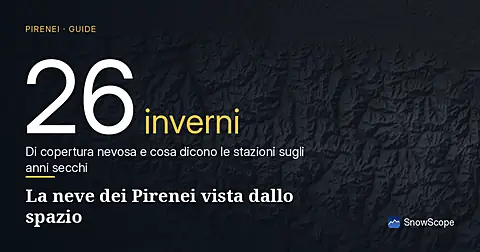
Tre inverni magri di fila sono finiti nel 2025-26; questo autunno è cominciato in modo normale.
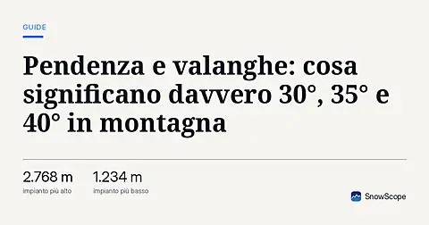
Una mappa delle pendenze di Les Grands Montets e di altri sette comprensori mostra quanto terreno supera i 30°, 35° e 40°, e perché questa soglia conta per le valanghe.

In 24 inverni su 46 le località del versante italiano e delle Alpi meridionali francesi hanno avuto un inverno relativamente più ricco del versante nord. Il grafico, le grandi annate e il tempo che le ha prodotte.

A dicembre la neve dipende prima di tutto dalla quota. 46 inverni passati in 676 stazioni delle Alpi mostrano quanta neve aspettarsi il 1°, il 15 e il 22 dicembre, da sotto i 1.200 m a oltre i 2.400 m.

Whistler Blackcomb ha ricevuto 75 cm di neve nuova in vetta in una settimana, poi una perturbazione mite con 124 mm d'acqua. Una guida semplice su fondo, neve fresca, pioggia e crosta.

Un piano economico di 3 giorni sul Lago di Como a dicembre con i prezzi reali 2026-27: treni, battelli, funicolare e sci ai Piani di Bobbio o a Madesimo, quanto si risparmia rispetto a Cortina e le probabilità di neve a Natale.

La neve di oggi a Livigno, cosa dice la previsione stagionale europea per dicembre e perché a Natale la quota vince su un mese caldo.
La neve di oggi a Cortina, la previsione stagionale europea per dicembre e le nostre probabilità di un Natale bianco nelle Dolomiti orientali.

Dove dicembre 2026 sembra più o meno nevoso nelle Dolomiti, dalla Val Gardena a Cortina: la previsione stagionale europea, la nostra mappa e le probabilità di un Natale bianco.
Quanta acqua potrebbe tenere la neve dell'Atlante a febbraio 2027: la previsione stagionale europea è di circa 3 °C più calda e più umida a ovest e a sud, e le probabilità di neve restano basse sui bacini del Marocco.

La previsione stagionale europea rende gennaio 2027 circa 2 °C più caldo sull'Atlante. La nostra tendenza per altezza della neve, acqua nella neve e acqua immagazzinata per i fiumi del Marocco.

Il Bou Iblane è ancora spoglio. La previsione stagionale europea vede un dicembre nettamente più caldo, e su tutto il Medio Atlante nevoso le nostre probabilità tendono a meno neve.

Dove dicembre 2026 sembra più o meno nevoso dal Montana al New Mexico: la previsione stagionale europea e la nostra mappa, con Colorado, Utah e Rocciose del Nord.

Il manto nevoso dagli Écrins alle Alpi Marittime e al Piemonte si riempirà come al solito a dicembre 2026? La previsione stagionale europea e la nostra mappa, montagna per montagna.

Ancora niente neve a Oukaimeden. La previsione stagionale europea vede un dicembre più caldo sull'Alto Atlante, e la nostra mappa mostra probabilità più basse su quasi tutte le cime.

La neve di oggi ai Grands Montets, la previsione stagionale europea per dicembre e la nostra mappa di dove dicembre sembra più o meno nevoso intorno al Monte Bianco.

Vail in numeri: picco abituale di circa 64 in (162 cm) a metà montagna in 46 inverni passati, marzo il mese più nevoso, più terreno, accesso e sicurezza.

Zermatt in cifre: dove la neve resiste, i mesi più sicuri e come raggiungere il paese senz'auto, da 46 inverni passati.
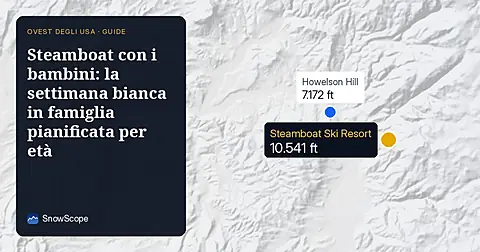
Steamboat, Colorado, per famiglie: cosa va bene per i più piccoli, i bambini, i ragazzi e i genitori, con la neve di 46 inverni passati a tre quote.
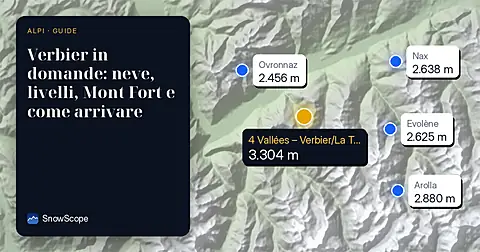
Verbier va bene per i principianti? Quando la neve è migliore? Come si arriva? Risposte sulle 4 Vallées e su 46 inverni passati.